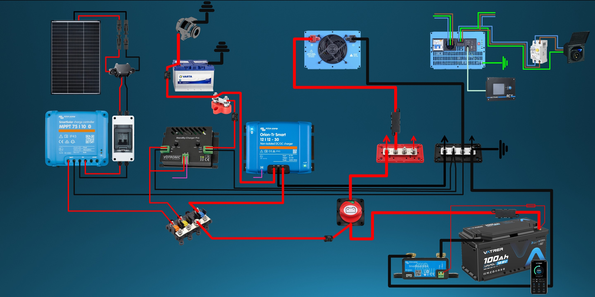
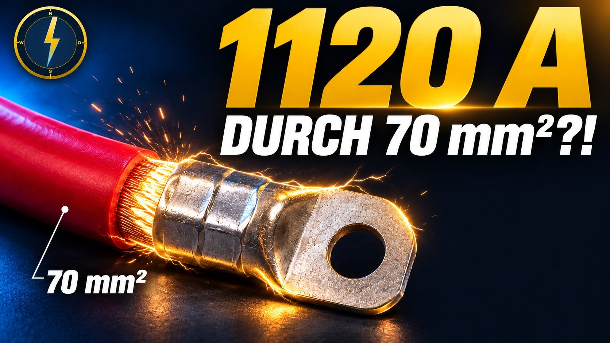
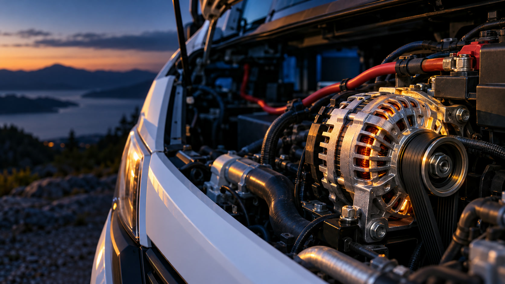
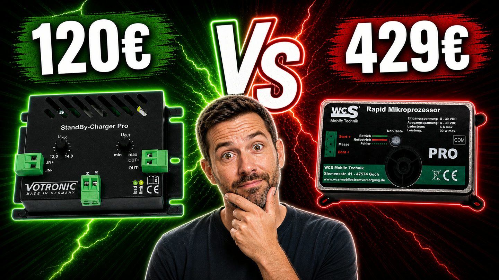
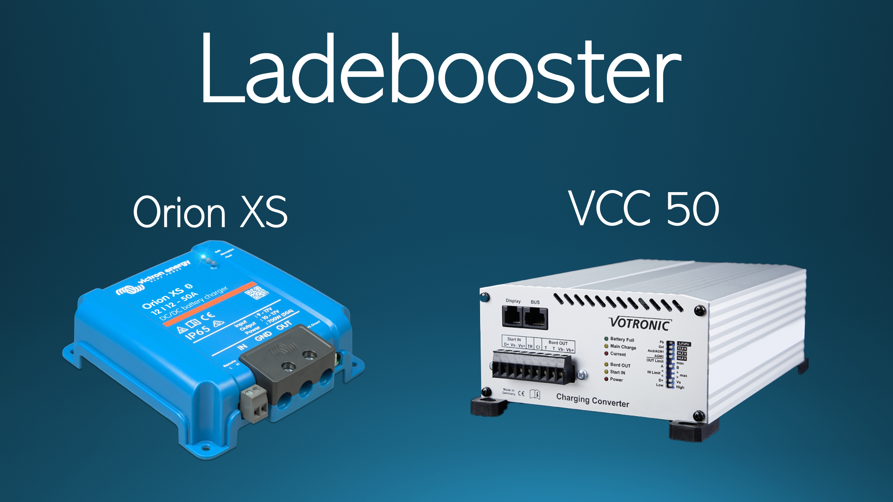
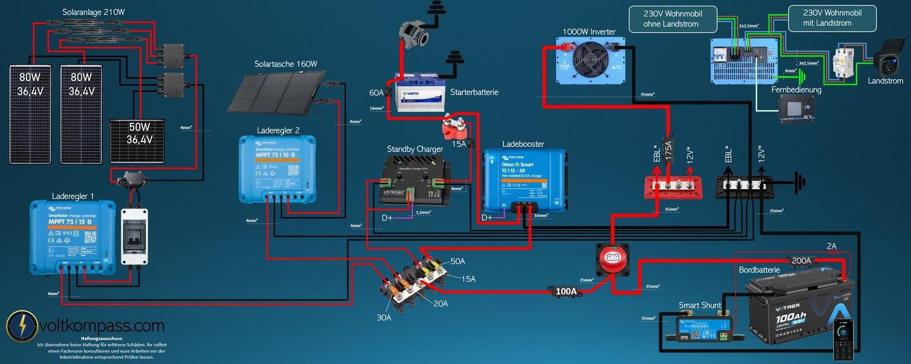
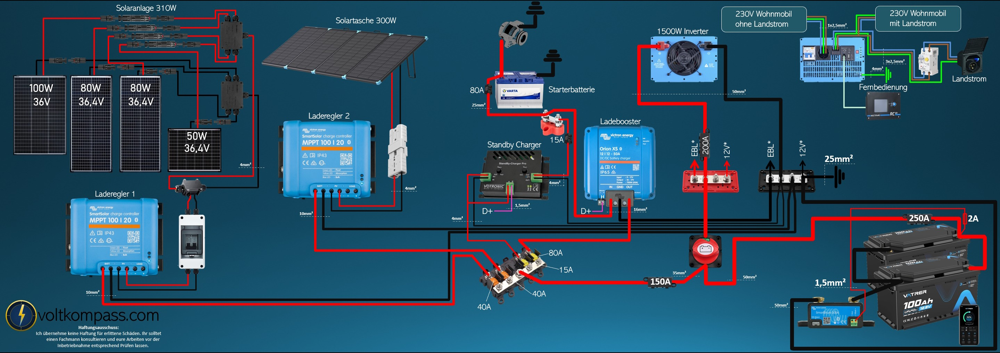
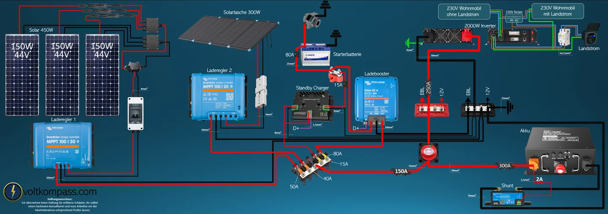

Wohnmobil-Solaranlage richtig anschließen: Schaltplan & Verkabelung
Vier komplette Schaltpläne von 150 bis 450 W mit Querschnitten, Sicherungen und Materialkosten, dazu Ladebooster, Solartasche und Wechselrichter.
Zu den SchaltplänenHier entstehen Beiträge zu typischen Ausbaustufen, Solaranlagen, LiFePO4-Batterien, Ladeboostern, Wechselrichtern und Planungsfragen: von der einfachen Basisversorgung bis zum grossen Autarkie-System.

Die Ratgeber erklären einzelne Komponenten und komplette Ausbaustufen. Du erfährst, worauf es bei Planung, Kabelquerschnitten, Sicherungen und Alltagstauglichkeit ankommt.
Vier komplette Schaltpläne von 150 bis 450 W mit Querschnitten, Sicherungen und Materialkosten, dazu Ladebooster, Solartasche und Wechselrichter.
Zu den Schaltplänen
Gel mit Idealwerten, Lithium bewusst pessimistisch: 4,9 ct gegen 21,3 ct pro kWh, dazu Gewicht, Platz und hohe Dauerlast im Vergleich.
Rechnung lesen
Warum ein 70er nur rund 200 A Dauerstrom bekommt, meine Richtwert-Tabelle und ein Rechner für Spannungsabfall, Länge, Strom und Querschnitt bei 12, 24 und 48 V.
Zum Kabelrechner
Aus 72 W werden 5 W? Renogy ShadowFlux 120 W im Check: Bypass-Dioden, Schattenwerte und für welches Wohnmobildach es sich lohnt.
Beitrag lesen
Gleiche Last für die Lichtmaschine, aber 3,5 bis 5 A mehr Ladestrom, neunmal weniger Wärme und stabil bei Hitze: Orion-Tr gegen Orion XS.
Vergleich lesen
140 A auf dem Typenschild, aber nur 25 A frei? Reserve berechnen, Wärme verstehen und den Booster schrittweise einstellen.
Ratgeber lesen
120 oder 429 Euro? Leistung, Kühlung, Einstellungen, Not-Taste und Victron Orion XS als mögliche Alternative.
Vergleich ansehen
SOC-Anzeige, BMS-Sperre oder Spannungsabfall? Mit Spannungswerten, Multimeter-Diagnose, Smart Battery Sense und SmartShunt.
Diagnose-Ratgeber ansehen
30 oder 50 A, Lichtmaschine, Trennrelais, Kabelquerschnitt, Sicherungen, D+, Schaltplan sowie Orion XS und Votronic VCC aus eigener Praxis.
Ladebooster-Ratgeber ansehen
Wohnmobil Solaranlage selber einbauen: 100 Ah LiFePO4, 150 W Solar, Ladebooster, Schaltplan-Orientierung, Materialliste und Kosten.
Beitrag zum Einbau ansehen
Mehr Solar für Stufe 1: 210-230 W Dachsolar, 160 W Solartasche, MPPT 75/15, MPPT 75/10, Parallelschaltung, Sperrdioden, Kosten und Materialliste.
Solar-Erweiterung ansehen
Mehr Autarkie mit 200 Ah LiFePO4, 310 W Dachsolar, 300 W Solartasche, Orion XS 50 A, zwei MPPT 100/20, 1500-W-Inverter, Kosten und Materialliste.
Autarkie-Stufe ansehen
320 Ah LiFePO4, 450 W Dachsolar, 300 W Solartasche, Orion XS 50 A und 2000 W Wechselrichter. Mit Schaltbildern, Materialliste und Kosten.
Stufe 4 ansehen